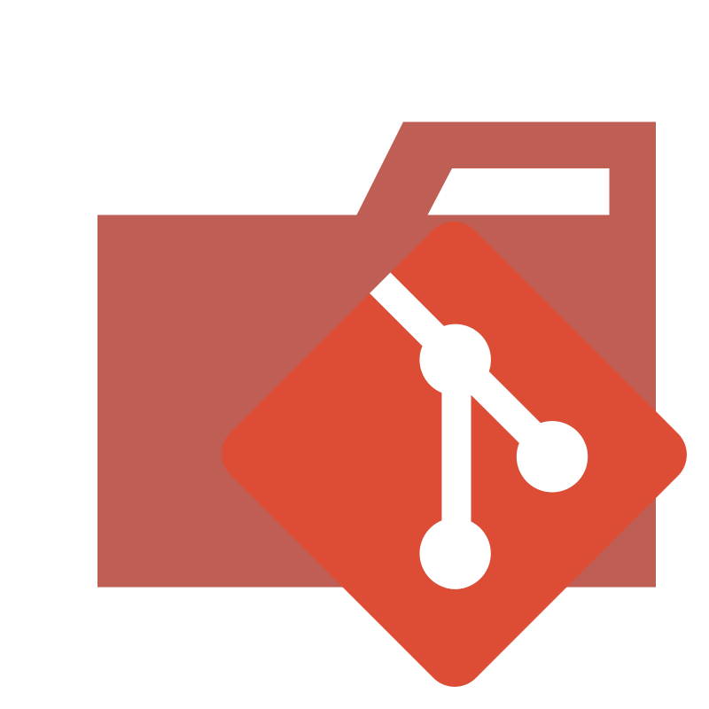

Tecnologias

Git (Controle de versão)

CSS3 (Estilização)

HTML5 (Estruturação de páginas web)

SQL (Consultas a bancos de dados)

Java (Desenvolvimento de software)

JavaScript (Programação web)

Python (Desenvolvimento e automação)

GitHub (Repositório de códigos)